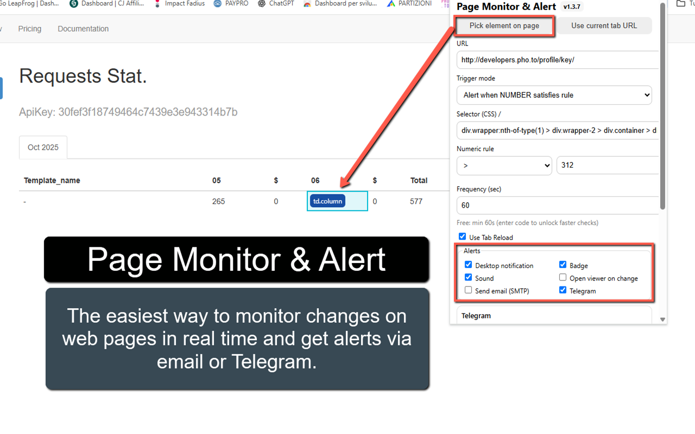
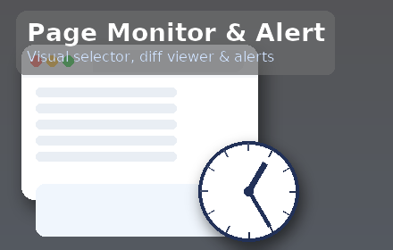

Page Monitor & Alert
Page Monitor & Alert keeps an eye on any web page and notifies you the moment something changes. Pick elements visually (no CSS needed), compare snapshots with a colored diff viewer, and trigger alerts on text, HTML, images, or numeric rules. Perfect for product restocks, price changes, scoreboards, job postings—anything that matters to you.
Choose a trigger mode (Any change, Text/HTML of selector, Image change, Text equals value, Number rule) and set a check frequency. Alerts can notify via desktop notification, toolbar badge, short sound beep, open the diff viewer, send an email (SMTP), or message you on Telegram. For sites that block direct fetches, turn on Use Tab Reload so the extension reloads the page and reads content through the content script.
The extension is private by design—tasks and settings are stored locally in your browser. It also autosaves your task draft around permission prompts, so you won’t lose settings if Chrome asks for site access during setup.
🚀 Quick Start
- Install from the Chrome Web store
- Open the popup and click Pick element on page (or paste a URL).
- Select the element you want to watch; URL and selector are filled automatically.
- Choose a Trigger mode (e.g., “Text of selector changes” or “Number satisfies rule”).
- Set the Frequency and enable your Alerts (notification / badge / sound / email / Telegram).
- Click Add/Save task. Done!
📷 Screenshots


✅ Features
- Visual selector: pick elements directly on the page (no CSS knowledge needed).
- Trigger modes: Any change; Text of selector changes; HTML of selector changes; Image change (selector or URL); Text equals value; Number rule ( >, ≥, <, ≤, = ).
- Colored diff viewer: see exactly what was removed/added.
- Alerts: desktop notification, toolbar badge, sound beep, open viewer, email (SMTP), Telegram.
- Multi-page monitoring: add as many tasks as you need—each with its own settings.
- Tab Reload fallback: works even when direct fetches are blocked.
- Autosave & resume: drafts survive permission prompts.
- Privacy: tasks and settings are stored locally in your browser.
🧩 Trigger Modes (Details)
- Any change (text): alerts on any textual change on the page.
- Text of selector changes: alerts when the selected element’s text changes.
- HTML of selector changes: alerts when the selected element’s HTML changes.
- Image change: watch by CSS selector or a direct image URL.
- Text equals value: alert when the selected element’s text equals a specific value.
- Number satisfies rule: parse the selected element’s text as a number and alert when a rule matches (>, ≥, <, ≤, =). To avoid noise, alerts fire on transition from false → true.
🔔 Alerts & Integrations
Desktop notification, Badge & Sound
Enable any combination. Each channel is independent—if one fails (e.g., notification icon issue), the others still fire.
- Notification: standard Chrome desktop notification.
- Badge: toolbar icon shows “NEW”.
- Sound: short beep, even if no tab is focused (via Offscreen API).
- Open viewer: auto-opens the diff viewer on change.
Email (SMTP)
The extension can send an email when a change is detected. Because browser extensions can’t speak SMTP directly, you point the extension at a tiny HTTPS relay you control (works great on Vercel). Inside the extension, you still set your SMTP host/port/secure/user/pass and sender/recipient.
Setup (Vercel, ~3 minutes)
- In the extension popup → Tools → Download “smtp-relay-vercel.js”.
- Create a free account on Vercel.
- New Project → create a simple Node/Serverless project.
- Add the
nodemailerdependency. - Create an API route (e.g.,
/api/send) and paste the file contents. - Deploy. Copy your public URL (e.g.,
https://YOUR-PROJECT.vercel.app/api/send). - In the extension → Email settings, paste the relay URL and enter your SMTP settings:
- SMTP Host/Port/Secure (e.g., Gmail:
smtp.gmail.com, 465, secure ON) - User & Password (use a Gmail App Password)
- From & To addresses
- SMTP Host/Port/Secure (e.g., Gmail:
- Click Send Test to verify delivery.
Tip: keep messages short (subject + URL + brief note). You control the SMTP account—no shared servers.
Telegram
- Open Telegram → search @BotFather → /newbot to create a bot and get your Bot Token.
- Start a chat with your bot (or add it to a group) and send a message like “hi”.
- Find your Chat ID (e.g., using @userinfobot or your own small helper). For groups, ensure the bot is a member.
- In the extension → Telegram settings, paste Bot Token and Chat ID.
- Click Send Test to confirm it works.
No extra server required. Messages send via Telegram’s official Bot API.
🆓 Free vs Pro
- Free: minimum check interval is 60 seconds.
- Pro: unlock intervals below 60s. Purchase your unlock code
🔒 Permissions (why they’re needed)
- Storage — save tasks and settings locally.
- Alarms — schedule periodic checks.
- Notifications — show desktop alerts.
- Offscreen — parse HTML and play a short beep when no tab is focused.
- Tabs & Scripting — reload/read pages with “Use Tab Reload”.
- Optional host permissions — requested only when you monitor a specific site.
❓ FAQ
Notifications don’t appear but the diff viewer shows a change?
Open chrome://extensions → Inspect Service Worker and check logs. Use popup → Tools → Test sound & badge to confirm permissions.
The site blocks the fetch.
Enable Use Tab Reload for that task; the extension will reload the page and read content through the content script.
Will a condition alert repeatedly if it stays true?
Conditional triggers (Text equals / Number rule) alert on transition false → true to avoid spam.
Privacy?
All tasks/settings are stored locally. Email uses your SMTP via your HTTPS relay; Telegram uses your Bot Token & Chat ID.